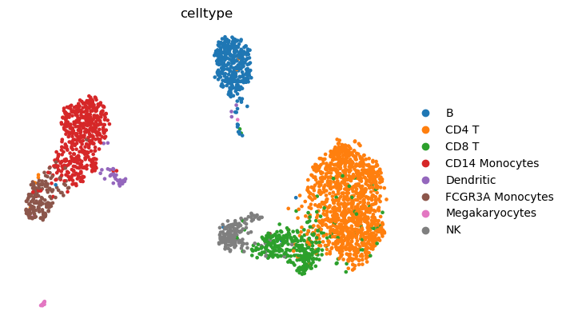

[1]:
### depending on which directory you run your notebook from
### you could locate pyroma package like this
import sys
#sys.path.append('/path/to/your/directory/pyroma/')
sys.path.append('/home/az/Projects/01_Curie/05_pyROMA/pyroma/')
[2]:
import pyroma
roma = pyroma.ROMA()
roma
[2]:
scROMA
[3]:
import os
import zipfile
import io
import numpy as np
import pandas as pd
import scanpy as sc
import scipy.io
from glob import glob
[4]:
print(os.getcwd())
/home/az/Projects/01_Curie/05_pyROMA/pyroma/docs/source/tutorial
[5]:
os.chdir('/home/az/Projects/01_Curie/05_pyROMA/pyroma')
[6]:
datasets_dir = "datasets"
adata = sc.read_h5ad(os.path.join(datasets_dir, "rna_10xpmbc3k.h5ad"))
adata
[6]:
AnnData object with n_obs × n_vars = 2700 × 32738
obs: 'celltype'
var: 'gene_ids'
standard preprocessing
[7]:
sc.pp.filter_cells(adata, min_genes=100)
sc.pp.filter_genes(adata, min_cells=3)
sc.pp.normalize_total(adata)
sc.pp.log1p(adata)
[8]:
adata
[8]:
AnnData object with n_obs × n_vars = 2700 × 13714
obs: 'celltype', 'n_genes'
var: 'gene_ids', 'n_cells'
uns: 'log1p'
run pyroma
[ ]:
import time
genesets_dir = "genesets"
roma.gmt =os.path.join(genesets_dir, "h.all.v2023.1.Hs.symbols.gmt")
roma.adata = adata
roma.pc_sign_mode = 'UseMeanExpressionAllWeights'
pathways_to_check = 'all' #['HALLMARK_NOTCH_SIGNALING', 'HALLMARK_PANCREAS_BETA_CELLS', 'HALLMARK_TGF_BETA_SIGNALING' ]
iters = 100
start = time.time()
roma.compute(pathways_to_check,
parallel=True,
loocv_on=True,
iters=iters,
)
end = time.time()
minutes, seconds = divmod(end - start, 60)
print(f"CPU Parallel {iters} iterations for shape {adata.shape}, running time (min): " + "{:0>2}:{:05.2f}".format(int(minutes),seconds))
Processing gene set: HALLMARK_NOTCH_SIGNALING | len of subsetlist: 25
Running time: 00:06.23
Processing gene set: HALLMARK_PANCREAS_BETA_CELLS | len of subsetlist: 14
Using existing null distribution
Processing gene set: HALLMARK_TGF_BETA_SIGNALING | len of subsetlist: 47
Running time: 00:07.89
Finished: CPU Parallel 10 iterations for shape (2700, 13714), running time (min): 00:23.62
[10]:
roma
[10]:
scROMA: module activities are computed
[11]:
roma.adata
[11]:
AnnData object with n_obs × n_vars = 2700 × 13714
obs: 'celltype', 'n_genes'
var: 'gene_ids', 'n_cells'
uns: 'log1p', 'ROMA', 'ROMA_stats', 'ROMA_active_modules'
all the pyroma statistics
[12]:
roma.adata.uns['ROMA_stats']
[12]:
| L1 | ppv L1 | Median Exp | ppv Med Exp | q L1 | q Med Exp | |
|---|---|---|---|---|---|---|
| HALLMARK_NOTCH_SIGNALING | 0.308422 | 0.5 | 0.046337 | 0.272727 | 0.50 | 0.818182 |
| HALLMARK_PANCREAS_BETA_CELLS | 0.329635 | 0.3 | -0.002735 | 1.000000 | 0.45 | 1.000000 |
| HALLMARK_TGF_BETA_SIGNALING | 0.234389 | 0.2 | -0.024408 | 0.727273 | 0.45 | 1.000000 |
active pathways
[13]:
roma.adata.uns['ROMA_active_modules'].sort_values(by='Median Exp')
[13]:
| L1 | ppv L1 | Median Exp | ppv Med Exp | q L1 | q Med Exp |
|---|
visualize results
[14]:
sc.pp.pca(roma.adata)
sc.pp.neighbors(roma.adata)
sc.tl.umap(roma.adata)
[15]:
adata.obs
[15]:
| celltype | n_genes | |
|---|---|---|
| AAACATACAACCAC-1 | CD4 T | 781 |
| AAACATTGAGCTAC-1 | B | 1352 |
| AAACATTGATCAGC-1 | CD4 T | 1131 |
| AAACCGTGCTTCCG-1 | CD14 Monocytes | 960 |
| AAACCGTGTATGCG-1 | NK | 522 |
| ... | ... | ... |
| TTTCGAACTCTCAT-1 | CD14 Monocytes | 1155 |
| TTTCTACTGAGGCA-1 | B | 1227 |
| TTTCTACTTCCTCG-1 | B | 622 |
| TTTGCATGAGAGGC-1 | B | 454 |
| TTTGCATGCCTCAC-1 | CD4 T | 724 |
2700 rows × 2 columns
[16]:
sc.pl.pca(adata, color=['celltype',
],
frameon=False,
ncols=2,
wspace=0.4)

[17]:
sc.pl.umap(adata, color=['celltype',
],
frameon=False,
ncols=2,
wspace=0.4)

[18]:
geneset_name = 'HALLMARK_INFLAMMATORY_RESPONSE'
roma.adata.obs[f'{geneset_name}_projections_1'] = roma.adata.uns['ROMA'][f'{geneset_name}'].svd.components_[0]
roma.adata.obs[f'{geneset_name}_projections_1_reverse'] = -1 * roma.adata.uns['ROMA'][f'{geneset_name}'].svd.components_[0]
GeneScores = pd.DataFrame(roma.adata.uns['ROMA'][f'{geneset_name}'].projections_1,
index=roma.adata.uns['ROMA'][f'{geneset_name}'].subsetlist,
columns=[f'{geneset_name}'])
sc.pl.pca(adata, color=['celltype',
f'{geneset_name}_projections_1'],
frameon=False,
ncols=2,
wspace=0.4)
sc.pl.umap(adata, color=['celltype',
f'{geneset_name}_projections_1'],
frameon=False,
ncols=2,
wspace=0.4)
---------------------------------------------------------------------------
KeyError Traceback (most recent call last)
Cell In[18], line 3
1 geneset_name = 'HALLMARK_INFLAMMATORY_RESPONSE'
----> 3 roma.adata.obs[f'{geneset_name}_projections_1'] = roma.adata.uns['ROMA'][f'{geneset_name}'].svd.components_[0]
4 roma.adata.obs[f'{geneset_name}_projections_1_reverse'] = -1 * roma.adata.uns['ROMA'][f'{geneset_name}'].svd.components_[0]
6 GeneScores = pd.DataFrame(roma.adata.uns['ROMA'][f'{geneset_name}'].projections_1,
7 index=roma.adata.uns['ROMA'][f'{geneset_name}'].subsetlist,
8 columns=[f'{geneset_name}'])
KeyError: 'HALLMARK_INFLAMMATORY_RESPONSE'
[ ]:
GeneScores
| HALLMARK_INFLAMMATORY_RESPONSE | |
|---|---|
| CXCL10 | -0.170376 |
| CCL2 | -0.171694 |
| CCL5 | 45.372082 |
| FPR1 | -3.665694 |
| CCL20 | 0.093291 |
| ... | ... |
| STAB1 | -0.306701 |
| IRF1 | 1.357086 |
| ICAM4 | -0.329905 |
| P2RX4 | -0.153743 |
| ABI1 | 1.406667 |
149 rows × 1 columns
[ ]:
# optional: to load pathway-genes dictionary
genesets = roma.read_gmt_to_dict(roma.gmt)
save and load results
[ ]:
save_dir = 'results'
roma.save_active_modules_results(path=save_dir)
[ ]:
del roma.adata
[ ]:
#roma.adata
[ ]:
load_dir = 'results'
roma.load_active_modules_results(path=save_dir)
[ ]:
roma.adata
AnnData object with n_obs × n_vars = 2700 × 13714
obs: 'celltype', 'n_genes', 'HALLMARK_INFLAMMATORY_RESPONSE_projections_1', 'HALLMARK_INFLAMMATORY_RESPONSE_projections_1_reverse'
var: 'gene_ids', 'n_cells'
uns: 'ROMA_active_modules', 'ROMA_stats', 'celltype_colors', 'log1p', 'neighbors', 'pca', 'umap', 'ROMA'
obsm: 'X_pca', 'X_umap'
varm: 'PCs'
obsp: 'connectivities', 'distances'
top contributing genes
[ ]:
GeneScores.sort_values(by=geneset_name)
| HALLMARK_INFLAMMATORY_RESPONSE | |
|---|---|
| LY6E | -9.469896 |
| TIMP1 | -8.930674 |
| CD14 | -7.395456 |
| NFKBIA | -5.897358 |
| RHOG | -4.730138 |
| ... | ... |
| CD69 | 3.288985 |
| IL7R | 6.165412 |
| IFITM1 | 6.817437 |
| LCK | 8.328794 |
| CCL5 | 45.372082 |
149 rows × 1 columns
[ ]:
# number of top and bottom genes
n_top = 10
short_name = geneset_name.split('_')[1]
top_n = GeneScores.sort_values(by=f'{geneset_name}', ascending=False).head(n_top).index.tolist()
bottom_n = GeneScores.sort_values(by=f'{geneset_name}', ascending=False).tail(n_top).index.tolist()
top_mean_exp = roma.adata[:, top_n].X.mean(axis=1)
bottom_mean_exp = roma.adata[:, bottom_n].X.mean(axis=1)
roma.adata.obs[f'top_{n_top}_{short_name}_Mean_Exp'] = top_mean_exp
roma.adata.obs[f'bottom_{n_top}_{short_name}_Mean_Exp'] = bottom_mean_exp
sc.pl.pca(roma.adata, color=['celltype',
f'{geneset_name}_projections_1',
f'top_{n_top}_{short_name}_Mean_Exp',
f'bottom_{n_top}_{short_name}_Mean_Exp'],
frameon=False,
ncols=2,
wspace=0.4)
sc.pl.umap(roma.adata, color=['celltype',
f'{geneset_name}_projections_1',
f'top_{n_top}_{short_name}_Mean_Exp',
f'bottom_{n_top}_{short_name}_Mean_Exp'],
frameon=False,
ncols=2,
wspace=0.4)
end
[ ]: